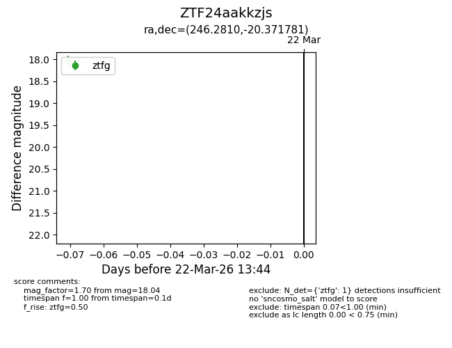
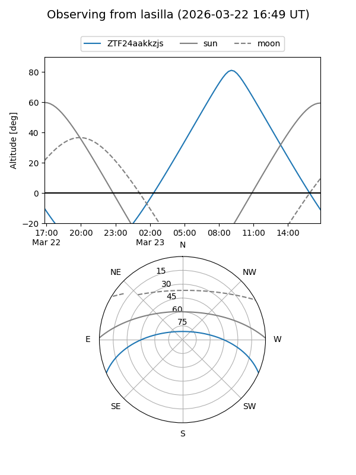
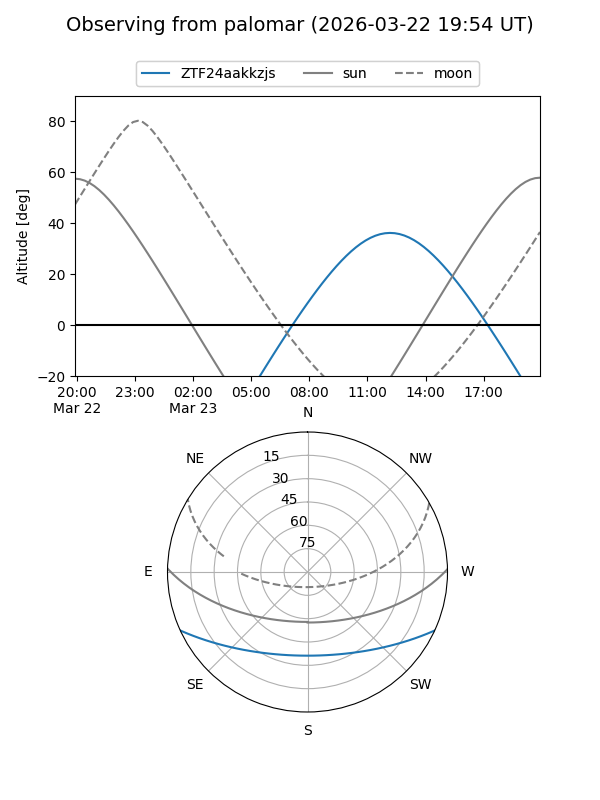

ZTF24aakkzjs
Target ZTF24aakkzjs at 2026-03-22 13:46
Aliases and brokers:
FINK: link
Lasair: link
ALeRCE: link
alt names
ZTF24aakkzjs (ztf,fink_ztf)
Coordinates:
equatorial (ra, dec) = 246.2810,-20.37178
equatorial (HMS+DMS) = 16:25:07.43,-20:22:18.41
galactic (l, b) = (356.0650,+19.78306)
Flags:
Photometry:
last ztfg=18.04
1 ztfg detections
Lightcurve

Visibility


Additional plots